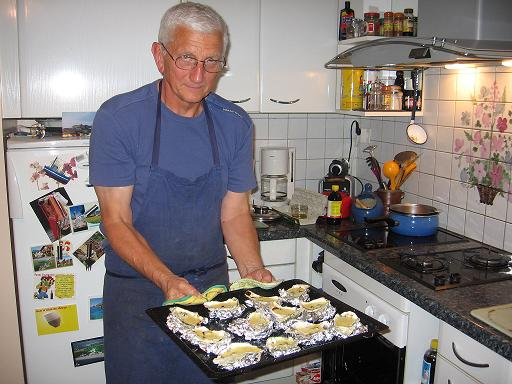
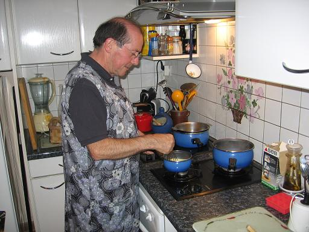

Recette n° 67 :
Huîtres farcies grillées
à la mode bretonne
pour 4 personnes

Ingrédients :
- une douzaine d'huîtres creuses de taille 3
- un verre de blanc sec
- un jaune d'oeuf
- une cuiller à soupe de beurre
- deux cuillers à soupe de crème fraîche
- une pincée de poivre
- de l'aluminium en feuilles

Préparation :
- ouvrir les huîtres,
les retirer sans les blesser, les mettre au chinois en conservant leur
jus filtré
- ajouter au jus le vin blanc et mettre à pocher les
huîtres quelques minutes ; les égoutter
- battre le jaune d'oeuf avec le beurre et la crème, chauffer
doucement sans cesser de battre, en ajoutant un peu du jus de pochage
- mettre les coquilles bien à plat sur des feuilles d'aluminium
froissées et sur la plaque du four
- mettre une huître par coquille, couvrir avec le mélange
oeuf-beurre-crème
- poivrer et ne surtout pas saler
- mettre à griller au four quelques minutes
- servir très chaud
Observations :
- recette exécutée le 3 septembre 2006 pour
Andrée, Michel, F et moi
- nous avions malheureusement salé... mais c'était bon
tout de même.